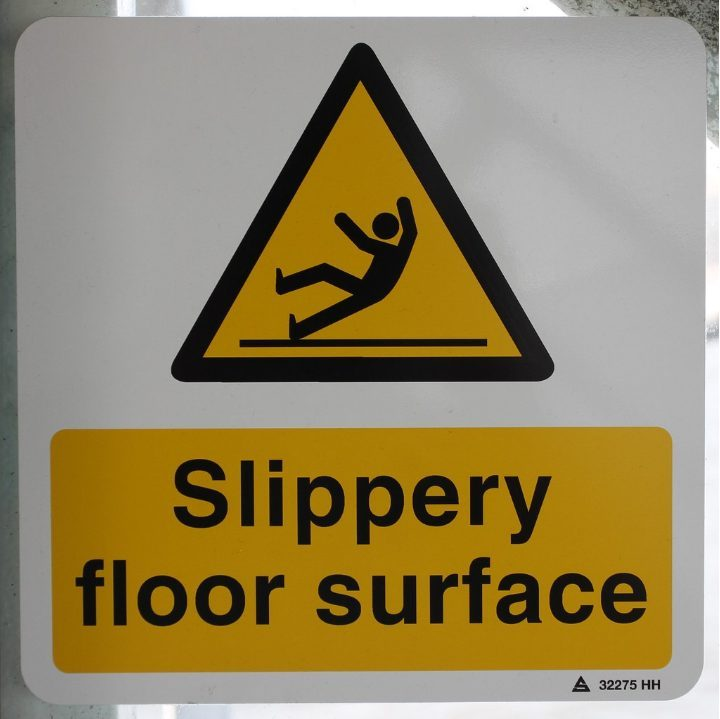
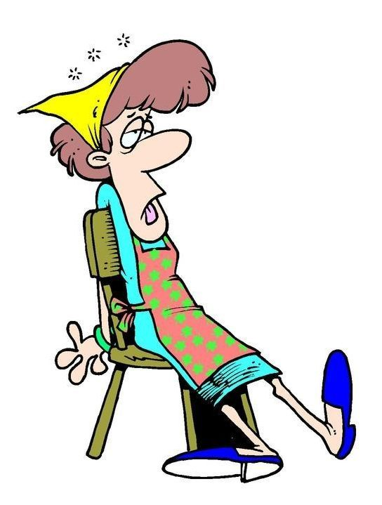
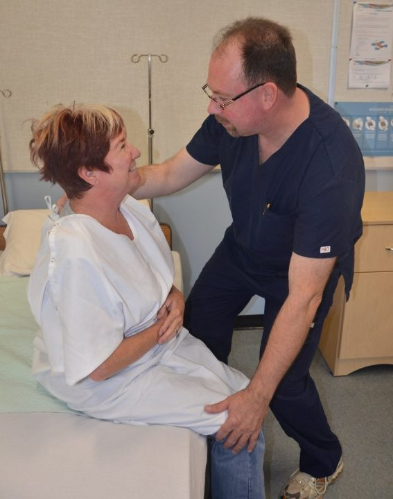
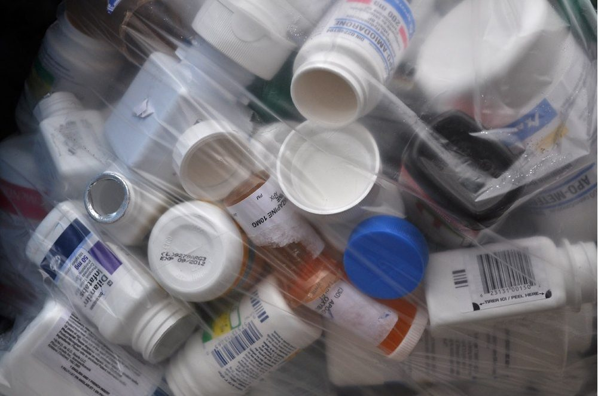
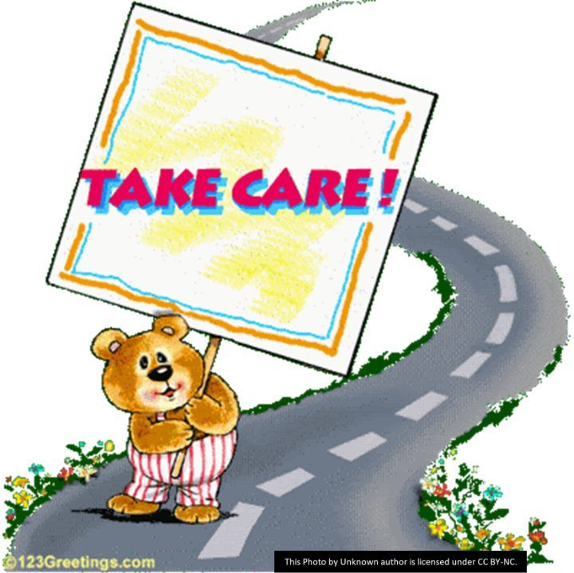

CHCAGE013 Work effectively in aged care · Lesson 6
Safe work and looking after yourself
Hazards and risks at work, in the community and with medication, and how to notice and manage your own stress.
Safe work protects the people you care for and you. In this lesson you will learn the difference between a hazard and a risk, find the risks in a home, outside the home and with medication, and learn how to notice and manage your own stress.
1 Hazard or risk? **
Everybody at work must manage risk. First you need to know the difference between a hazard and a risk.
- NP14 S1 P1A hazard is something that could cause harm. Example: a slippery floor.
- NP14 S1 P2A risk is the likelihood (chance) that harm will happen because of a hazard. Example: how likely it is that someone slips and falls on that floor.
- NP14 S1 P3The hazard is the thing. The risk is the chance of harm (and how bad the harm could be).

2 Your role with risk **
Managing risk is everyone's job, including yours.
- NP14 S2 P1Report any hazards and risks you notice to your supervisor.
- NP14 S2 P2Follow the workplace work health and safety (WHS) policies and procedures.
- NP14 S2 P3Go to training on working safely, for example manual handling and infection control.
- NP14 S2 P4Get enough rest before you come to work. A tired worker makes mistakes.
- NP14 S2 P5In home care: do a quick safety check when you arrive, have a charged phone, and let your employer know where you are.

3 Risks when you work in a home **
Working in a person's own home has its own risks. You need three for each situation in your answer.
- NP14 S3 P1Slips and trips: uneven floors, loose mats, clutter.
- NP14 S3 P2Illness or infection from helping people, or from animal waste (for example a cat litter tray).
- NP14 S3 P3Cuts or burns when helping with meals and food preparation.
- NP14 S3 P4Stress from long hours of work.
- NP14 S3 P5Workplace violence: from the person, their family or anyone else in the home.
- NP14 S3 P6Hazardous manual tasks: a low bed, mopping a large floor, working in a small bathroom.
- NP14 S3 P7Chemicals used for cleaning, especially in rooms with poor air flow (ventilation).
- NP14 S3 P8Car accidents when driving between clients: bad roads, rushing, or the person's behaviour in the car.

4 Risks when you go out: shopping and the community centre **
Going out with a client is good for them. But there are risks. Think about the person, the activity, the place and getting there.
- NP14 S4 P1Shopping: driving risks, for example road conditions, or the person's behaviour while you drive.
- NP14 S4 P2Shopping: the place itself: crowds, noise, slippery or uneven floors, steps, and getting in and out of the car with bags.
- NP14 S4 P3Shopping: toilets: can the person get to an accessible toilet in time? (Also an infection risk.)
- NP14 S4 P4Shopping: food and drink: the person needs water and food, especially in the heat.
- NP14 S4 P5Community centre craft activity: do a risk assessment of the room first.
- NP14 S4 P6Community centre: check the equipment (scissors, glue gun, glitter) is safe to use.
- NP14 S4 P7Community centre: make sure the person is physically able to do the activity.
- NP14 S4 P8Community centre: think about who else will be there, and any relationship problems between people.
5 Medication risks at home **
Many older people take several medicines. At home, things can go wrong. If you see any of these, tell your supervisor straight away.
- NP14 S5 P1Medicines are stored the wrong way (for example too hot, or within reach of children).
- NP14 S5 P2Medicines are in containers with no label.
- NP14 S5 P3The person takes medicines at the wrong times.
- NP14 S5 P4The person does not take the medicine, hides it, and then takes too much later.
- NP14 S5 P5The person has side effects from a medicine.

Sort each risk into the right situation.
6 Looking after yourself: stress
Aged care can be stressful, for example after a hard conversation about abuse. You need to notice your stress and do something about it.
- NP14 S6 P1Monitor your stress: watch for the signs, and notice if they are getting worse or better.
- NP14 S6 P2Signs in your body: tiredness, headaches, trouble sleeping, skin problems, upset stomach (diarrhoea), a racing heart (palpitations).
- NP14 S6 P3Signs in your mind and behaviour: anxiety, irritability, feeling you cannot cope, trouble concentrating, feeling depressed, anger, pulling away from people, working less well, taking more sick days.
- NP14 S6 P4Ways to manage stress: relax, exercise, yoga or meditation, positive self-talk, enjoy a hobby, eat well and rest.
- NP14 S6 P5At work: debrief after a hard event, ask a mentor, do training, and use the Employee Assistance Program (EAP) for free counselling.
- NP14 S6 P6Who to talk to at work: your supervisor.

Watch: TakeCare
Is it a sign of stress or a way to manage stress?
Wait... if I rest, I work faster AND safer? Why did nobody tell me?
Rusty the Rush Clock
Spot the hazards, report them, and look after yourself too. Well done!
Daisy the Dignity Daisy
Next lesson: Mary's simulated shift at Lakeview Respite Care.